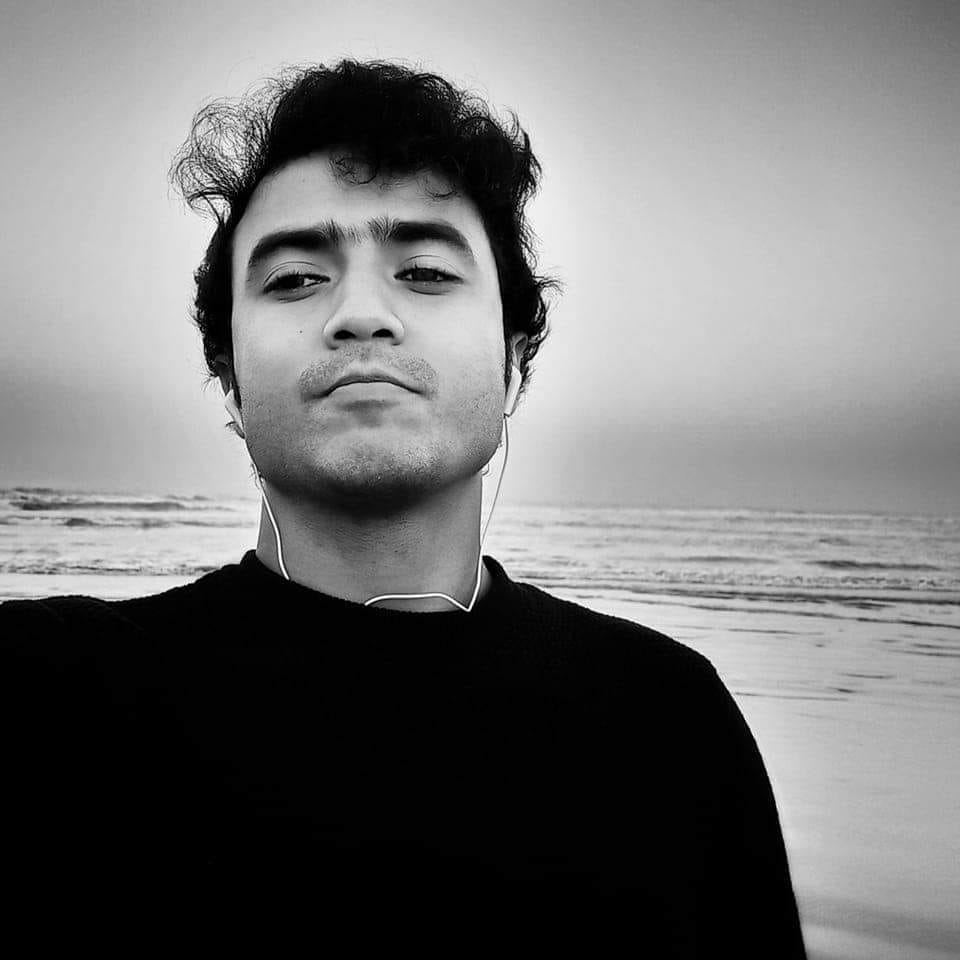

Reminiscence: My childhood friend Prio is no more. He was a journalist working on the streets of Dhaka and was shot in the head three days back in the afternoon. His body was left on the street until midnight when a police van took it. Later, the body went missing and was transferred from one police station to another. It took two more days for his family to retrieve it from there. He left behind an innocent little baby who had already lost her mother.
I am not seeking any justice, just asking for everyone's prayers for my friend. That's all. Thank you, everyone. Thank you, world.
Narrator: Shihab Shonglap